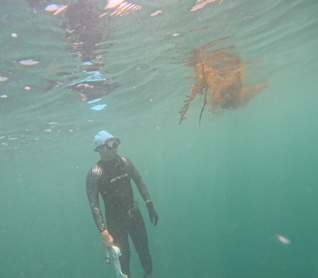

I study the ocean circulation and also am a sea-going person. Since 2019, I have been diving in XiaoLiuqiu, Green Island, and Orchid Island in Taiwan, where the warm Kuroshio Current flows through. I am still not used to the cold water in California.